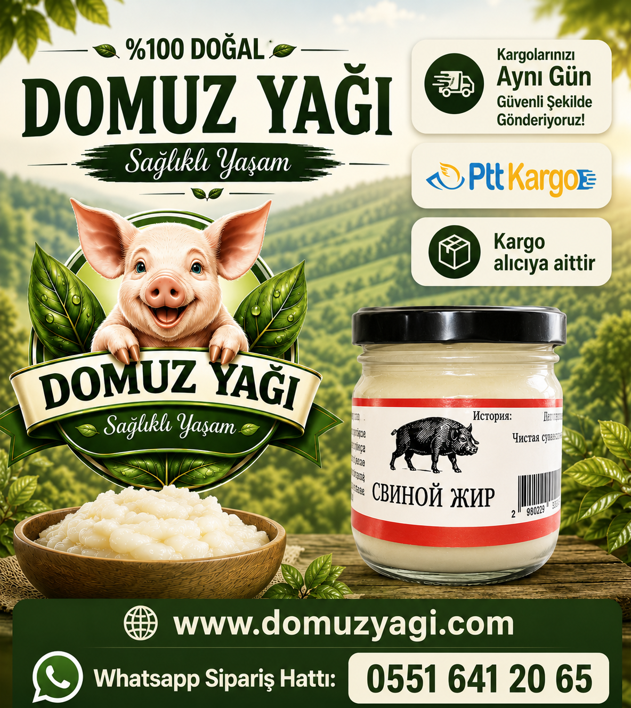
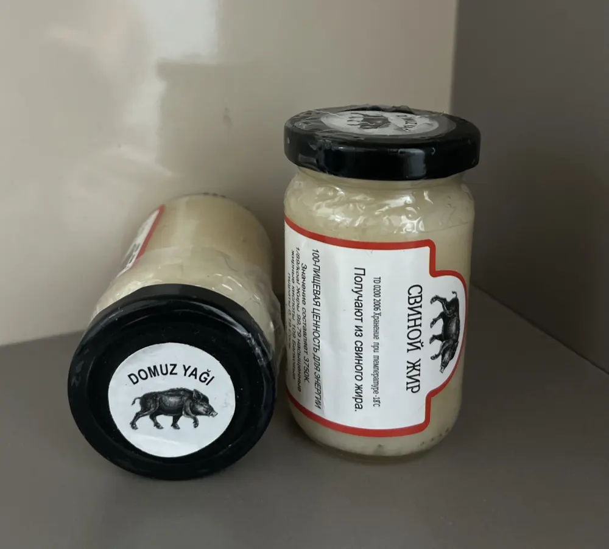

Domuz Yağı
50 gram
250 ₺5,00 ₺ / gram
Küçük boy deneme paketi. Cilt bakımı ve küçük alanlar için ideal.
- %100 saf ve doğal
- Katkı maddesi içermez
- Isıya dayanıklı ambalaj
Cilt bakımı, yanık tedavisi, ağrı ve sızılar için etkili doğal çözüm. Katkı maddesi yok, doğrudan doğadan kapınıza.
Yanık izleri, lazer sonrası tahrişler, sivilce izleri, hemoroid, ameliyat dikiş izleri, diz kireçlenmesi ve daha fazlası için.

%100 saf ve doğal, katkı maddesi içermeyen ürünlerimiz. Adet seçin, siparişiniz WhatsApp'a hazır gelsin.
Küçük boy deneme paketi. Cilt bakımı ve küçük alanlar için ideal.

Orta boy, en çok tercih edilen paket. Düzenli kullanım için uygun.

Aile boyu paket. Uzun süreli kullanım için ekonomik seçenek — kargo ücretini biz karşılıyoruz.
Seçtiğiniz ürünler WhatsApp mesajına otomatik yazılır — siz yalnızca gönder'e basın.
Üyelik yok, form doldurmak yok. Sipariş vermek bir mesaj kadar kolay.
50 gr, 115 gr veya 5'li paketten dilediğiniz adedi belirleyin. Toplam tutarı anında görün.
WhatsApp butonuna basın — siparişiniz mesaja hazır gelir. Dilerseniz doğrudan telefonla arayın.
Adresinizi iletin, siparişiniz ısıya dayanıklı ambalajla Türkiye'nin her yerine gönderilsin.

Doğal & SafDomuz yağı faydaları özellikle cilt sağlığı alanında oldukça etkilidir. Geleneksel formülüyle cilt ve kas sağlığını destekler.
Cilt yanıkları, lazer sonrası tahrişler ve yatak yaraları gibi durumlarda cildi nemlendirir, onarır ve yenilenmesini destekler. Sivilce izleri, hemoroid ve ameliyat dikiş izleri için de doğal bir bakım sunar.
Diz kireçlenmesi ve menisküs ağrılarında harici masaj yağı olarak rahatlatıcı etkisiyle kullanılabilir.
Faydaları ve kullanım alanları hakkında detaylı bilgiler

İnsan sağlığı üzerindeki etkileri, geleneksel kullanım alanları ve modern tıptaki yeri hakkında detaylı bilgiler.
Devamını Oku
Kullananların deneyimleri, cilt bakımındaki rolü ve terapötik etkileri hakkında kapsamlı rehber.
Devamını Oku
Evcil hayvanlarınızın cilt problemleri ve çeşitli sağlık sorunlarında domuz yağının kullanımı.
Devamını Oku
Doğru kullanım yöntemleri, uygulama teknikleri ve maksimum fayda için ipuçları.
Devamını OkuMüşterilerimizin gerçek deneyimleri
Yanık izlerim için kullandım, gerçekten mucizevi etkisi oldu. 3 haftada izler neredeyse tamamen kayboldu. Kesinlikle tavsiye ediyorum.
2 hafta önceAmeliyat dikiş izim için aldım. İlk başta şüpheliydim ama 1 aylık kullanım sonunda iz neredeyse görünmez hale geldi. Teşekkürler!
1 ay önceKöpeğimin cilt problemleri vardı, veteriner önerisiyle domuz yağı aldık. 2 haftada tüyleri yeniden çıkmaya başladı. Harika bir ürün!
3 hafta önceDiz kireçlenmem için kullanıyorum. Ağrılarımda gözle görülür azalma oldu. Doğal olduğu için içim rahat. Teşekkür ederim.
2 ay önceSivilce izleri için denedim ve sonuç mükemmel! Cildim daha pürüzsüz ve canlı görünüyor. Hızlı kargo için de teşekkürler.
1 hafta önceSipariş, kargo ve kullanım hakkında en çok sorulanlar
Kargo ücreti alıcıya aittir. 2.500 ₺ ve üzeri siparişlerde kargo ücretini biz karşılıyoruz. 5'li paket (2.500 ₺) doğrudan bu kapsamdadır; farklı ürünlerden oluşan sepetiniz 2.500 ₺'yi geçtiğinde de kargo bizden.
İki yolu var: Ürünler bölümünden istediğiniz adedi seçip WhatsApp ile Sipariş Ver butonuna basın — siparişiniz mesaja hazır olarak gelir. Ya da 0551 641 20 65 numarasını arayıp doğrudan sipariş verin. Üyelik veya form doldurma gerekmez.
Siparişleriniz Türkiye'nin her yerine kargo ile gönderilir. Teslim süresi bulunduğunuz ile göre değişmekle birlikte genellikle birkaç iş günü içindedir. Ürünler ısıya dayanıklı özel ambalajla gönderildiği için yolda bozulma riski en aza indirilir.
Hayır, kesinlikle gıda olarak tüketilmemelidir. Ürünlerimiz yalnızca harici kullanım (cilt üzerine uygulama) içindir. Domuz yağı kremi olarak bilinen ürünlerimiz tamamen cilt bakımı ve tedavi amaçlıdır.
Etki süresi kullanım amacına ve kişiden kişiye değişiklik gösterir. Yanık ve yara tedavisinde genellikle 3–7 gün içinde gözle görülür iyileşme başlar. Cilt kırışıklıkları ve izler için düzenli kullanımda 2–4 hafta sonra etkiler fark edilebilir. Diz ağrıları için masaj uygulandığında rahatlama çok daha hızlı hissedilebilir.
%100 saf domuz yağı katkı maddesi, parfüm veya koruyucu içermediğinden genellikle alerjik reaksiyona neden olmaz. Ancak çok nadiren hassas ciltlerde reaksiyon görülebilir. İlk kullanımda küçük bir alanda test etmenizi öneririz.
Serin ve kuru bir yerde, direkt güneş ışığından uzakta saklanmalıdır. Açıldıktan sonra buzdolabında muhafaza edilmesi önerilir. Uygun koşullarda saklandığında 1 yıl boyunca etkinliğini korur. Isıya dayanıklı özel ambalajlarımız kargo sırasında bozulma riskini en aza indirir.
Evet, kullanıcıların büyük çoğunluğu üründen memnun kalmaktadır. Özellikle yanık tedavisinde, ameliyat izlerinde ve cilt problemlerinde olumlu sonuçlar bildirilmektedir. 15+ yıllık tecrübemiz ve binlerce müşterimizin memnuniyeti en büyük referansımızdır.
Aklınıza takılan her şey için arayın — her gün 09:00 – 21:00 arası buradayız.
Türkiye'nin her yerine gönderim
Kargo ücreti alıcıya aittir
2.500 ₺ ve üzeri siparişlerde kargo bizden
Isıya dayanıklı özel ambalaj
Bursa / Osmangazi
15+ yıllık tecrübe
%100 müşteri memnuniyeti